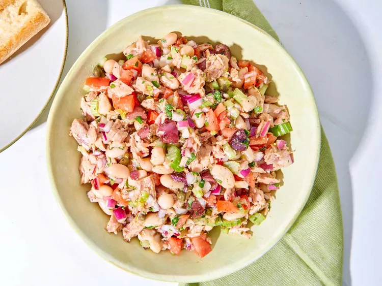

Italian Style No Mayo Tuna Salad

This Italian style tuna salad without mayo is delicious served on crusty bread with a drizzle of EVOO.
Ingredients
- 1 (15-ounce) can cannellini beans, drained and rinsed
- 1 medium tomato, seeded and diced
- 3 tablespoons rice vinegar
- 1/4 cup chopped kalamata olives
- 1/4 cup finely chopped red onion
- 1/4 cup finely chopped celery
- 2 tablespoons extra virgin olive oil
- 1 tablespoon capers
- 1 tablespoon finely chopped parsley
- 2 teaspoons red wine vinegar
- 1/2 teaspoon kosher salt
- 1/4 teaspoon freshly ground black pepper
- 1/4 teaspoon garlic powder
- 1/8 teaspoon dried oregano
- 2 (5-ounce) cans yellowfin tuna packed in olive oil, drained
Directions
Step 1
Combine cannellini beans, tomato, olives, red onion, celery, olive oil, capers, parsley, red wine vinegar, salt, pepper, garlic powder, and oregano in a large bowl; stir until mixed together. Crumble tuna into bowl and toss to combine.